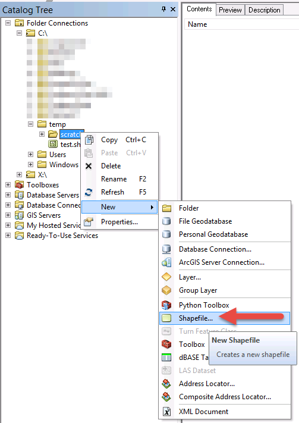
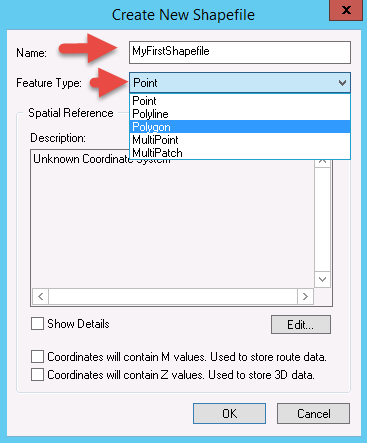

Posted on July 26th, 2015 at 7:19 PM
This tutorial is Part 1 of a 3 Part series where I will demonstrate how to create a shapefile, create/modify its spatial data, and finally, create/modify its attribute table.
This tutorial is going to look at how to create a basic polygon shapefile from scratch, so lets jump right into it.
Firstly, you'll want to boot up ArcCatalogue. Take a peek at the Catalogue Tree panel on the left and notice it describes your machines file structure. On this panel, we are going to navigate to the directory where we'd like to create the shapefile by clicking on the + icons to expand the subfolders.
Once you've found the directory where you would like to create the shapefile, Right click it, go to New and then Shapefile as demonstrated in the image below:
A new popup box should appear asking you to fill in some details about the shapefile you're about to create. So fill in a name (I've used 'MyFirstShapefile' here), Feature Type which could be either point, line, or polygon, multipoint or multipatch (I've gone with polygon here).
See the Image below as a reference: Once you're done go ahead and click
Next week, we'll look into how to actually populate this new shapefile with polygon attributes via ArcGIS' Editor Tool.